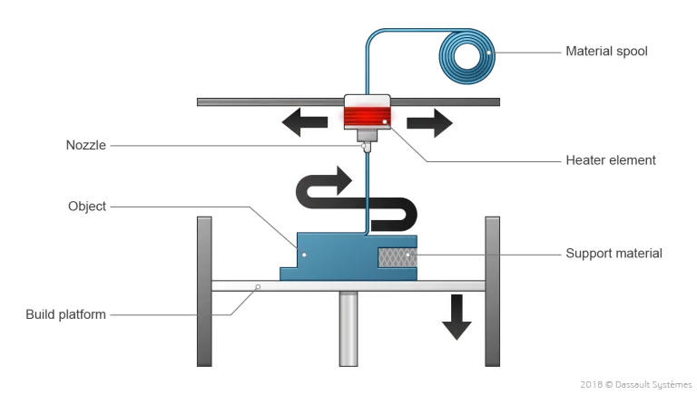
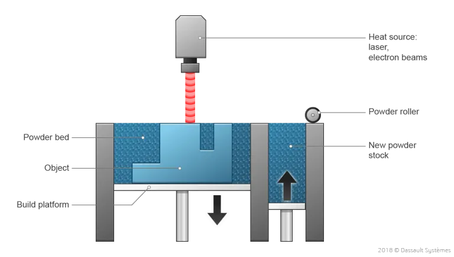

¿Qué es la impresión 3D?
La impresión 3D es el proceso de creación de objetos mediante el depósito de capas de material unas sobre otras. La impresión 3D se denomina fabricación aditiva (AM) en lugar de los métodos sustractivos tradicionales, como el fresado CNC, cuando se utiliza para la producción industrial.
Esta tecnología existe desde hace unas cuatro décadas, inventada a principios de los años 80. Aunque la impresión 3D empezó siendo una técnica lenta y costosa, los amplios avances tecnológicos han hecho que las tecnologías AM actuales sean más asequibles y rápidas que nunca.


¿Qué son las impresoras 3D?
En pocas palabras, las impresoras 3D utilizan el diseño asistido por ordenador (CAD) para crear objetos 3D a partir de diversos materiales, como plástico fundido, metales o polvos.
Una impresora 3D típica es muy parecida a una impresora de inyección de tinta que se maneja desde un ordenador. Construye un modelo 3D capa a capa, de abajo a arriba, imprimiendo con repeticiones sobre la misma zona en un método conocido como modelado de deposición fundida (FDM).
La impresora, que funciona de forma automática, crea un modelo a lo largo de varias horas convirtiendo un dibujo CAD en 3D sobre muchas capas bidimensionales de sección transversal, es decir, impresiones 2D separadas que se colocan una encima de otra, pero sin el papel entre medio.
En lugar de utilizar tinta, que nunca alcanzaría un gran volumen, la impresora deposita capas de plástico o polvo fundido y las fusiona (y a la estructura existente) con adhesivo o luz ultravioleta.
Estas impresoras tienen una flexibilidad extrema en cuanto a lo que se puede imprimir. Pueden utilizar plásticos para imprimir materiales rígidos, como gafas de sol. También pueden crear objetos flexibles, como fundas de teléfono o mangos de bicicleta, utilizando un polvo híbrido de goma y plástico.
Algunas impresoras 3D tienen incluso la capacidad de imprimir con fibra de carbono y polvos metálicos para obtener productos industriales resistentes.

Cómo funciona la impresión 3D
La impresión 3D es una forma diferente de producir piezas en comparación con las tecnologías tradicionales de fabricación sustractiva (mecanizado CNC) o fabricación de moldeo por inyección.
Para esta tecnología no se necesitan herramientas especiales (por ejemplo, una herramienta de corte con una geometría determinada o un molde). En su lugar, la pieza se fabrica de forma directa en la plataforma construida capa a capa, lo que conlleva un conjunto único de ventajas y desventajas.
El proceso comienza siempre con un modelo digital en 3D como plano del objeto físico. Después, el software de la impresora corta este modelo en finas capas bidimensionales y lo convierte en un conjunto de instrucciones en lenguaje de máquina (código G) para que la impresora lo ejecute.
A partir de aquí, el funcionamiento de una impresora 3D varía según el proceso. Por ejemplo, las impresoras FDM de sobremesa funden filamentos de plástico y los depositan en la plataforma de impresión a través de una boquilla (como una pistola de pegamento de alta precisión controlada por ordenador).
Las grandes máquinas industriales de SLS utilizan un láser para fundir (o sinterizar) finas capas de polvos de metal o plástico.
Los materiales disponibles también varían según el proceso. Los plásticos son, con mucho, los más comunes, pero los metales también pueden imprimirse en 3D.
Las piezas producidas también pueden tener una amplia gama de propiedades físicas específicas, que van desde objetos de ótica transparente hasta objetos similares al caucho.
Dependiendo del tamaño de la pieza y del tipo de impresora, una impresión suele tardar entre 4 y 18 horas en completarse.
Sin embargo, las piezas impresas en 3D rara vez están listas para ser utilizadas al salir de la máquina. Suelen requerir algún tipo de procesamiento posterior para conseguir el nivel de acabado superficial deseado. Estos pasos requieren tiempo y esfuerzo adicional (normalmente manual).

¿Para qué se puede utilizar la impresión 3D?
En lo que respecta al consumidor, la impresión 3D puede ayudar a crear baratijas y decoraciones personalizadas, objetos prácticos para el hogar, figuritas y mucho más. Sin embargo, esta tecnología presenta las mayores ventajas para los casos de uso profesional, en los que se centrará este artículo.
Gracias al gran número de tecnologías de fabricación aditiva (AM) disponibles y a la diversidad de materiales de impresión 3D compatibles, existe una gama casi infinita de aplicaciones con la impresión 3D.
Prototipado rápido
La creación de prototipos es el uso más común de la impresión 3D en el mundo profesional. Llamado también prototipado rápido, se diseña rápidamente un modelo y se imprime en 3D poco después.
El mundo ha sido testigo recientemente de una de las demostraciones más impresionantes durante la pandemia mundial de coronavirus. Se diseñaron respiradores, bastoncillos y protectores faciales en cuestión de días y se produjeron en masa por miles en unas pocas semanas.
Los modelos 3D evolucionaron continuamente en función de los comentarios graduales de médicos e investigadores. Esta respuesta inmediata fue muy eficaz en la lucha contra el virus e ilustra perfectamente el potencial, la adaptabilidad y la rapidez (tiempo de comercialización) que ofrece la fabricación aditiva.
En un tono más ligero, estas ventajas podrían aplicarse a situaciones normales y más afortunadas en diversos sectores, como el aeroespacial, el de la automoción, el de la educación, el del petróleo y el gas, el médico, y la lista continúa.
Piezas de uso final
Con un poco de proceso posterior, las piezas impresas en 3D de grado industrial de hoy en día son de tan buena calidad, que los industriales pueden utilizarlas directamente.
Algunas marcas de automóviles, por ejemplo, utilizan la fabricación aditiva para producir ciertas partes del interior del coche o componentes del motor. Lo mismo ocurre en el sector aeroespacial, donde la optimización del peso es de suma importancia. De hecho, las tecnologías de impresión 3D pueden aumentar la fuerza y la resistencia de las piezas, al tiempo que emplean materiales más ligeros.
No obstante, hay obstáculos que superar para que la impresión 3D sea viable para los artículos de uso final. Las piezas deben estar certificadas, especialmente en el caso de industrias muy reguladas como la aeroespacial. Deben ser idénticas para obtener la certificación AM, lo que requiere impresoras 3D extremadamente precisas y procesos y materiales estandarizados.
Herramientas, plantillas y accesorios
Las herramientas son otro de los principales usos de la impresión 3D. El servicio de impresión 3D puede fabricar herramientas, plantillas y accesorios de forma rápida, en el momento y sin retrasar la cadena de producción debido a la falta de un dispositivo.
Esto también permite a los profesionales adaptar sus herramientas y utensilios al objeto o pieza en la que están trabajando y no al revés.
Los métodos tradicionales, como el moldeo por inyección, pueden tardar varias semanas en ser respaldados por un presupuesto consecuente para obtener una herramienta nueva y personalizada. La impresión 3D no es necesariamente mejor que las técnicas de fabricación convencionales para todos los casos de uso, pero suele ser más rápida y asequible.
Personalización en masa
La producción en masa ofrece la importante ventaja de reducir los costes a escala, pero cada pieza debe ser idéntica.
La fabricación aditiva, sin embargo, está permitiendo a las marcas producir en masa objetos personalizados. Esto se denomina personalización en masa o customización en masa. Los fabricantes pueden beneficiarse de las mismas economías de escala al tiempo que ofrecen el valor añadido de la personalización a sus clientes.
Cómo funcionan las impresoras 3D: Una visión general de las tecnologías de impresión 3D:
Las impresoras 3D son capaces de replicar objetos 3D de la misma manera que las impresoras 2D normales pueden imprimir texto o imágenes en papel. En lugar de una capa, hay cientos o miles de capas apiladas.
Antes de realizar cualquier impresión, los fabricantes deben preparar modelos 3D. Puedes diseñar tu propio objeto 3D con un software de CAD como SOLIDWORKS, o puedes encontrar y descargar un modelo 3D en línea.
Una vez que el modelo 3D está listo, el software de corte dedicado (también conocido como "slicer") debe cortar y convertir en un formato que la impresora 3D pueda leer.
A continuación, el objeto puede imprimirse en 3D. Existen numerosos métodos, pero las principales tecnologías de impresión 3D son las siguientes
- - FFF (fabricación de filamento fundido)
- - SLA (estereolitografía)
- - PBF (fusión de lecho de polvo)
- - Chorro de material o aglutinante
FFF (fabricación de filamento fundido)
Cuando la gente explica qué es la impresión 3D, la mayoría tiende a ilustrar los métodos de impresión 3D basados en filamento, ya que es el más utilizado y fácil de entender.
Una impresora 3D FFF (o FDM, por Fused Deposition Modeling) dibuja una capa de plástico fundido en su lecho de impresión o construye una placa. La fusión se produce dentro de un extrusor, que calienta el filamento de plástico a medida que los engranajes lo empujan a través de la boquilla.
SLA (estereolitografía)
Estereolitografía es una técnica de impresión en 3D con resina que utiliza un láser o una fuente de luz para solidificar la resina fotosensible.
El proceso de solidificación se conoce como curado, y puede ocurrir de varias maneras:
- SLA láser: un láser cura la resina punto por punto, capa tras capa.
- DLP (Digital Light Processing): un dispositivo proyecta luz que se redirige con precisión hacia la resina gracias a un sistema de espejos.
- MSLA (Masked Stereolithography): un dispositivo que proyecta luz enmascarada selectivamente por una pantalla LCD, como la estereolitografía LCD.
- Las impresoras 3D de resina son capaces de imprimir capas más finas que las impresoras 3D FFF, lo que ofrece un nivel de detalle mucho mayor que buscan los joyeros o los dentistas, por ejemplo.
PBF (Fusión de Lecho de Polvo)
Existen varios métodos de impresión 3D basados en polvo, siendo los más comunes el SLM (Selective Laser Melting) y el SLS (Selective Laser Sintering).
Una potente fuente láser se dirige a un lecho de material de impresión 3D en polvo. El calor del láser hace que determinadas partículas de polvo se fusionen. Estas técnicas se utilizan a menudo para imprimir metal en 3D, pero también son compatibles con plásticos como el nylon.
Material y Binder Jetting
Las impresoras 3D de chorro de material son las que más se parecen a las impresoras 2D. Cientos de diminutas boquillas que depositan tinta sobre una capa de material en polvo las montan.
O bien la tinta es el material objetivo, o bien la tinta es un agente aglutinante (básicamente pegamento) que se deja caer sobre el material objetivo.


Principales materiales de impresión 3D: ¿Con qué se puede imprimir en 3D?
Los materiales de impresión 3D están estrechamente relacionados con los procesos de impresión 3D. En este punto, nos vamos a centrar en los materiales más populares o comunes que se utilizan hoy en día en la impresión 3D y sus aplicaciones más importantes.
Cada proceso de impresión 3D es compatible con diferentes materiales. Los plásticos (tanto termoplásticos como termoestables) son, con diferencia, los más comunes, seguidos de los metales y en cierta medida de los polvos. También se pueden imprimir en 3D algunos materiales compuestos y cerámicos.
Plásticos
Los plásticos para impresión 3D son materiales ligeros en formato filamento con una amplia gama de propiedades físicas, adecuados tanto para fines de creación de prototipos como para algunas aplicaciones funcionales.
Los plásticos son termoplásticos (con FDM o SLS), que suelen ser más adecuados para aplicaciones funcionales, o termoestables (con SLA/DLP o Material Jetting), que suelen ser más adecuados para aplicaciones que requieren una buena apariencia visual.
Tipos de materiales de plástico para impresión 3D
- Filamento PLA: El plástico de impresión 3D más común. Alta rigidez, buen acabado final y asequible. El PLA es un termoplástico biodegradable para la creación de prototipos no funcionales de bajo coste. Mejor acabado que el ABS, pero más frágil. No es apto para altas temperaturas.
- Filamento ABS: Plástico común, con mejores propiedades mecánicas y térmicas que el PLA. El ABS es un termoplástico común con buenas propiedades mecánicas y excelente resistencia al impacto, superior al PLA pero con detalles menos definidos.
- Filamento de Nylon: Se utiliza para sustituir piezas funcionales moldeadas por inyección; dispone de buena resistencia química. El nylon o poliamida (PA) es un termoplástico con excelentes propiedades mecánicas, alta resistencia química y a la abrasión. Es perfecto para aplicaciones funcionales.
- Filamento PETG: Bueno para piezas mecánicas con alta resistencia al impacto y flexibilidad. El PETG es un termoplástico con propiedades mejoradas respecto al PLA, con alta resistencia al impacto y excelente resistencia química y a la humedad. El PETG puede ser esterilizado.
- Filamento TPU: Material similar al caucho, adecuado para tubos, agarraderas, cierres y juntas. El TPU es un elastómero termoplástico de baja dureza.
- Filamento ASA: Estabilidad a los rayos UV y alta resistencia química; material preferido para aplicaciones en exteriores. El ASA es un termoplástico con propiedades similares al ABS, pero con una mayor resistencia térmica, química y a la intemperie. Es perfecto para aplicaciones de exterior.
- Filamento PEI: Plástico de ingeniería, aplicaciones de alto rendimiento e ignífugo. El PEI es un termoplástico de ingeniería con buenas propiedades mecánicas y una excepcional resistencia al calor, los productos químicos y los incendios.
- Resina: Prototipos con alto nivel de detalle y superficie lisa, similares a los moldes de inyección. Las resinas son fotopolímeros termoestables que se solidifican cuando se exponen a la luz, produciendo piezas de gran detalle con un acabado superficial suave, similar al de un molde de inyección.
Metales
Al igual que el resto de procesos de impresión 3D, las impresoras 3D de metal construyen las piezas añadiendo material capa a capa a partir de un diseño 3D digital, de ahí el término alternativo de fabricación aditiva.
De este modo, se pueden construir piezas con geometrías imposibles de fabricar con tecnologías «tradicionales» sustractivas (mecanizado CNC) o formativas (fundición de metales), y sin necesidad de utillaje especializado (por ejemplo, un molde).
Los metales de impresión 3D se utilizan principalmente en aplicaciones que requieren una alta resistencia, una alta dureza o una alta resistencia térmica.
Al imprimir en metal, la optimización de la topología es fundamental para maximizar el rendimiento de la pieza y mitigar el alto coste de la tecnología.
Tipos de materiales de metal para impresión 3D
- Metal DMLS/SLM: Es compatible con la mayor gama de metales y produce piezas para aplicaciones de ingeniería de alto nivel. Para casos de uso menos exigentes.
- Metal Binder Jetting o Inyección Aglutinante: Está ganando popularidad debido a su menor coste, siendo el acero inoxidable el material más utilizado con diferencia.
- Fusión por haz de electrones o EDM: Es otra tecnología de impresión 3D de metales que utiliza un haz de electrones controlado por bobinas electromagnéticas para fundir el polvo metálico. El cabezal de impresión se calienta y se mantiene en condiciones óptimas de vacío durante el proceso de fabricación. La temperatura a la que se calienta el material viene determinada por el material utilizado.
- Sistemas de impresión 3D en metal basados en la extrusión: (similares al FDM) reducen los costes de la impresión 3D en metal para fines de prototipado.
- Acero inoxidable: Es una aleación metálica de gran ductilidad, resistencia al desgaste y a la corrosión que se puede soldar, mecanizar y pulir fácilmente. Presenta alta resistencia a la tracción, a la temperatura y a la corrosión.
- Aluminio: Es un metal con buena relación resistencia-peso, alta conductividad térmica y eléctrica, baja densidad y resistencia natural a la intemperie.
Polvos
Las impresoras 3D más modernas utilizan materiales en polvo para construir productos. Dentro de la impresora, el polvo se funde y se distribuye en capas hasta conseguir el grosor, la textura y los patrones deseados. Los polvos pueden proceder de diversas fuentes y materiales, pero los más comunes son:
Tipos de materiales de polvo para impresión 3D
- Poliamida (Nylon): Gracias a su resistencia y flexibilidad, la poliamida permite un alto nivel de detalle en un producto impreso en 3D. El material es adecuado para unir piezas y encajar partes en un modelo impreso en 3D. La poliamida se utiliza para imprimir todo tipo de productos, desde cierres y asas hasta coches y figuras de juguete.
- Alumide: Compuesto por una mezcla de poliamida y aluminio gris, el polvo de alumide permite crear algunos de los modelos impresos en 3D más resistentes. Reconocido por su aspecto granulado y arenoso, el polvo es confiable para modelos y prototipos industriales.
- En forma de polvo, materiales como el acero, el cobre y otros tipos de metal son más fáciles de transportar y moldear en las formas deseadas.
Al igual que los distintos tipos de plástico utilizados en la impresión 3D, el polvo metálico debe calentarse hasta el punto en que pueda distribuirse capa por capa para formar una forma completa.

Ventajas y desventajas de la Impresión 3D
Los fabricantes de impresoras 3D afirman que son hasta 10 veces más rápidas que otros métodos y 5 veces más baratas, por lo que ofrecen grandes ventajas para quienes necesitan prototipos rápidos en horas en lugar de días.
Aunque las impresoras 3D de gama alta siguen siendo caras (suelen costar entre 25.000 y 50.000 euros), son una fracción del coste de las máquinas de prototipado rápido más sofisticadas (que cuestan entre 100.000 y 500.000 euros), y también hay máquinas mucho más baratas (se puede comprar un kit de impresora 3D Tronxy por unos 100-200 euros).
También son razonablemente pequeñas, seguras, fáciles de usar y fiables (características que las han hecho cada vez más populares en lugares como las escuelas de diseño/ingeniería).
En el lado negativo, el acabado de los modelos que producen suele ser inferior al de las máquinas de prototipado rápido de gama alta. La elección de materiales suele limitarse a uno o dos, los colores pueden ser toscos y la textura puede no reflejar muy bien el acabado previsto del producto.
Por lo tanto, en general, los modelos impresos en 3D pueden ser mejores para las primeras visualizaciones aproximadas de nuevos productos; las máquinas de prototipado rápido pueden utilizarse más adelante en el proceso, cuando los diseños están más cerca de la finalización y circunstancias como la textura precisa de la superficie son más importantes.